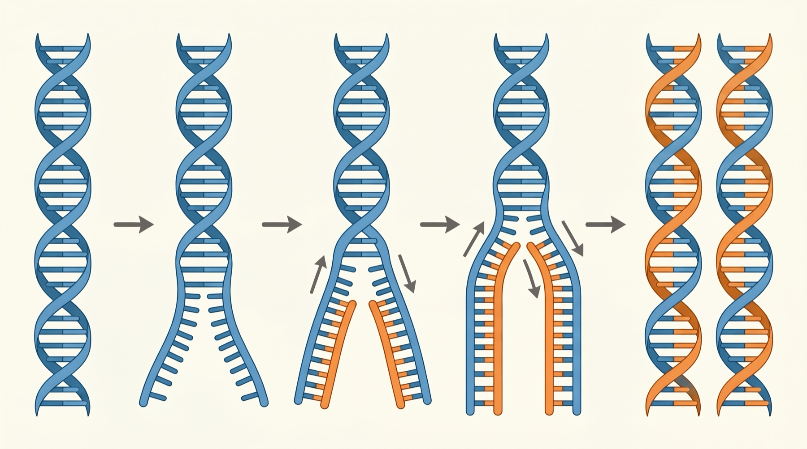
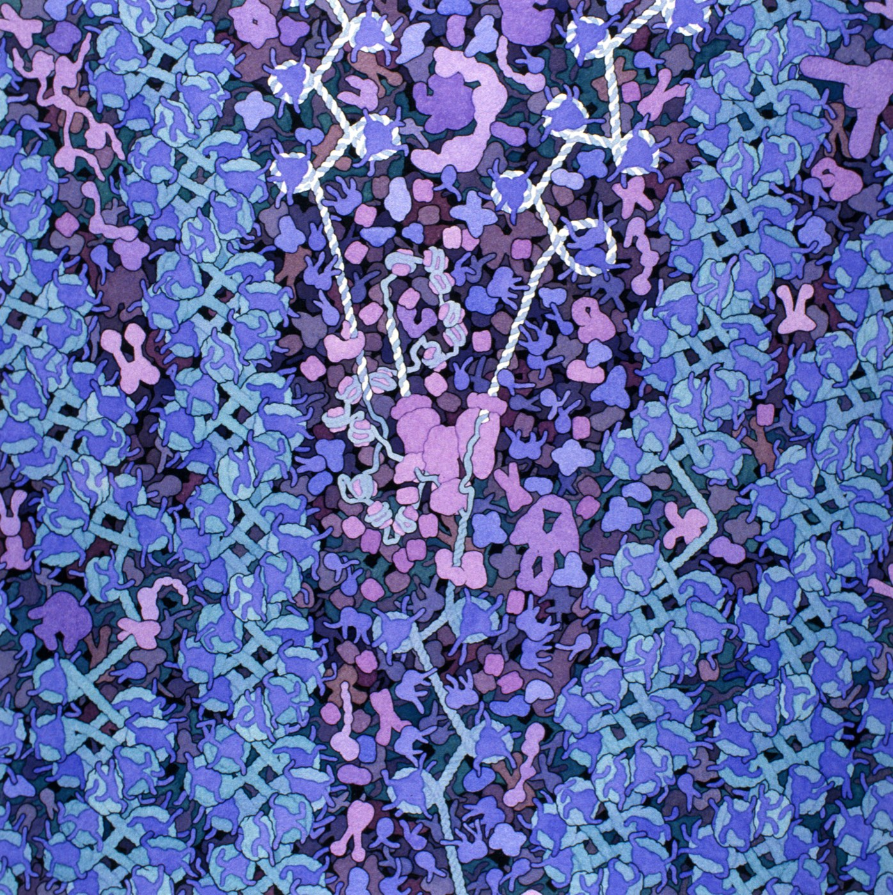

5.1 DNA Structure and Replication
Before you can explain how a gene builds a protein, or how a fault in one gene causes cystic fibrosis, you need to know what the molecule actually is. This chapter is about its shape — and about the fact that its shape is the reason it can be copied at all.
Before you start
Write down two or three things you already believe about DNA, and be honest about how sure you are of each. Your anchor guide has four columns for this — Definitely, Pretty sure, Maybe, What the heck?
Then sketch how you think these three things are related, without looking anything up:
- DNA
- a gene
- a chromosome
Almost everyone gets this partly wrong the first time, and the specific way you get it wrong is useful — it tells you which of the three you are picturing at the wrong size.
DNA, gene, chromosome — three words, one object
These three are not three separate things sitting side by side. Each one sits inside the next. That single idea clears up most of the confusion.
![A magnification sequence running left to right in seven stages. A whole cell; its nucleus, filled with tangled threads; one condensed X-shaped chromosome pulled from that tangle; the chromosome unwinding into a looped, coiled fibre; the fibre resolving into DNA wound around a row of barrel-shaped histone proteins; the string unwinding into a double helix; and finally the helix drawn out flat as a long ladder with one short highlighted band on it labelled one gene. Two notes read: two metres of DNA inside a nucleus six micrometres across; and, if this chromosome were a hundred metre running track, a gene like CFTR would be about sixteen centimetres of it.](../images/u5/dna-packaging.jpeg)
To summarise, in the order the words nest:
- Chromosomes contain one long strand of DNA coiled around proteins.
- A strand of DNA contains coding sections called genes.
- Genes are specific sequences of nucleotides.
- Not all of the DNA codes for genes. A great deal of it does other jobs, or no known job at all.
A chromosome is not "made of genes" the way a wall is made of bricks, and it is not something the DNA is stored in. The chromosome is the DNA, packaged. When a cell is not dividing you would not see the familiar X shape at all — the DNA is unwound and spread through the nucleus.
The building block
You met nucleic acids earlier this year as one of the four macromolecules. DNA is a nucleic acid, and like every macromolecule it is a long chain built from one repeating small unit. For DNA that unit is the nucleotide, and it has exactly three parts:
| Part | What it does |
|---|---|
| A phosphate group | Links to the next nucleotide's sugar, forming the backbone |
| A deoxyribose sugar | The other half of the backbone, and what the base attaches to |
| A nitrogenous base — A, T, G or C | Points inwards and pairs with a base on the other strand. This is the part that carries information |
Sugar and phosphate alternate all the way along, forming the two rails of the ladder. Those rails are identical everywhere in every organism — there is no information in them. All of the information sits in the order of the bases hanging off them.
Four letters feels like very little to write a person with. But the number of possible sequences grows explosively: a stretch just 10 bases long already has 410 — over a million — possible sequences. Your genome is around three billion bases long.
Why the bases pair the way they do
The two strands are held together by hydrogen bonds between the bases, and the pairing is not a matter of preference. It is forced by shape and by bond count:
- A always pairs with T, held by two hydrogen bonds.
- G always pairs with C, held by three hydrogen bonds — so a G–C pair is the stronger of the two.
A and G are purines, which are large, double-ringed bases. T and C are pyrimidines, which are small and single-ringed. Every rung of the ladder is one large base plus one small base, so every rung is exactly the same width and the helix stays an even thickness the whole way along. Pair two purines and it would bulge; pair two pyrimidines and it would pinch.
The strands also run in opposite directions — they are antiparallel. This matters more than it sounds, and it comes back in 5.2.
Build one for yourself. Pair a base against every base of the template, then unzip the finished molecule and copy it.
Build a DNA molecule, then copy it
Interactive- Try deliberately pairing A with G. Read the reason you are given. Why would a molecule built that way not hold an even width?
- Once you finish step 1, cover the screen and try to state the sequence of the strand you built without looking at the template. Now uncover it. What does that tell you about where the information lives?
- After copying, look carefully at the shading on the two daughter molecules. What is the same about them, and what is different?
- Press New sequence and do it again. Did you need any new knowledge the second time, or only the same two rules?
Replication: copying the molecule
Recall the cell cycle from earlier this year. DNA is copied during S phase of interphase, before the cell divides — because both daughter cells need a complete set. The process is called DNA replication.
Three steps, and you have already done all of them by hand:
- Unwind and unzip. An enzyme called helicase breaks the hydrogen bonds between the paired bases. The two strands separate, but neither strand is damaged — only the rungs break, never the rails.
- Build new strands. Each old strand acts as a template. DNA polymerase brings in free nucleotides and pairs each one against the template, following exactly the rules you used.
- Proofread. DNA polymerase checks its own work as it goes and replaces bases it has mispaired.

Now watch it at its real speed. Drew Berry's animations at WEHI are built from the actual structures of these enzymes. Watch helicase unzip the helix, and the two new strands being built at once — one smoothly, and one in short pieces that are stitched together afterwards. Every enzyme on screen is working at the speed it really works at in your cells.

The structure of DNA and the copying of DNA are the same fact stated twice. Because every base has exactly one legal partner, each strand contains enough information to rebuild the other. A molecule that stored its information only once could not be copied this way at all.
Why it has to be almost perfect
Your cells copy roughly three billion base pairs every time one of them divides, and they do it many billions of times over your life. After proofreading, DNA polymerase leaves about one error in every billion bases.
That number is hard to feel, so scale it up. Three billion letters is about a million pages of printed text — a stack of paper taller than a house. Copying the whole stack out by hand and making about three mistakes in it: that is what one of your cells does, in a few hours, every time it divides.
That is extraordinarily accurate — and it is still not zero. Those surviving errors matter twice over, in opposite directions, and holding both ideas at once is the point of this unit:
- A change in the sequence changes the protein the gene codes for. That is where cystic fibrosis, sickle cell anaemia and many other conditions come from. You will follow that chain in 5.3.
- A change in the sequence is also the only original source of new genetic variation. Without copying errors there would be nothing for natural selection to act on, and Unit 6 would have no fuel.
Hold onto this. Students often decide that mutations are simply bad. They are not "bad" or "good" — they are changes, and whether a particular change helps, harms or does nothing depends entirely on which base changed and what the organism is doing with that protein.
Where this goes next
You can now say what DNA is and how it is copied. But notice what is still missing: nothing so far explains what the sequence is actually for. A cell that could only copy its DNA and never read it would be a library nobody visits.
So the next question is the obvious one. The order of the bases is clearly information — how does a cell get that information out and turn it into something that does a job? That is Chapter 5.2, and by the end of it you will have built a protein yourself, starting from nothing but a strand of DNA.
Check your understanding
- A student says "chromosomes are made of genes, and genes are made of DNA." One part of that is right and one part is misleading. Which is which, and how would you fix it?
- One strand of a DNA molecule reads T A C G G A T. Write the other strand. Explain how you knew, without having seen this molecule before.
- A G–C pair takes more energy to separate than an A–T pair. Using what you know about hydrogen bonds, explain why. What might that mean for a stretch of DNA that is very rich in G and C?
- Explain, in two sentences, why replication is described as semiconservative rather than simply "copying".
- Why does replication have to happen before a cell divides rather than after?
Quick check
This part marks itself, and points you back to the right section if something is shaky.
Which statement describes how DNA, a gene and a chromosome are related?
Each one sits inside the next: DNA is the molecule, a gene is a stretch of it, and a chromosome is the whole molecule packaged. When a cell is not dividing you would not see the familiar X shape at all — the DNA is unwound and spread through the nucleus.
Between divisions a cell's chromosomes are unwound and spread out through the nucleus. What has happened to the genes that sit on one of those chromosomes?
Condensing and unwinding change how tightly the DNA is packed, not what is written along it. A gene is a stretch of the molecule the way a sentence is a stretch of a book — you cannot lift the sentence out and leave the book behind.
A human DNA molecule and an oak tree's DNA molecule are different. Where does that difference lie?
The rails are identical in every living thing. All of the information is in the order of the bases hanging off them — which is why a stretch of just 10 bases already has over a million possible sequences.
You are handed a single nucleotide and asked which letter of the code it represents. Which of its three parts do you need to look at?
Two of the three parts are identical in every nucleotide in every organism, so all of the information has to sit in the one part that can differ. That is also why four letters are enough — a stretch of just 10 bases already has over a million possible orders.
Why can A never pair with G?
Every rung is one purine plus one pyrimidine, so every rung is the same width and the helix stays an even thickness. Two purines would bulge; two pyrimidines would pinch. The pairing rules are forced by shape rather than chosen.
A model of DNA is built with T paired against C along one rung. What is wrong with that rung?
Every legal rung is one large purine plus one small pyrimidine, which is what holds the ladder to the same width from end to end. Two large bases bulge and two small ones pinch, so the pairing rules fall out of shape rather than being imposed on it.
A stretch of DNA is unusually rich in G and C. What would you predict about it?
G–C pairs are held by three hydrogen bonds and A–T pairs by two, so a G–C rich region is the harder one to pull apart. That is a real effect — it is why such regions need more heat to separate in the laboratory.
Heated gently, one region of a DNA molecule separates into single strands before the rest of the molecule does. What does that tell you about that region?
Two hydrogen bonds hold an A–T pair and three hold a G–C pair, so the mix of bases in a stretch sets how much energy is needed to open it. Helicase meets the same difference inside the cell that a heated tube does in the laboratory.
After one round of replication, what is true of the two DNA molecules produced?
That is what semiconservative means: half of each new molecule is conserved from the old one. The word is doing real work — it rules out the alternative in which the original molecule stays intact and an entirely fresh copy is built alongside it.
Follow one of the blue original strands in Figure 5.3 all the way through replication. Where does that strand end up?
Following a single strand is the clearest way to see what semiconservative claims: the old molecule is neither consumed nor kept intact as a unit, but dealt out one strand to each product. That is why neither daughter molecule is wholly old or wholly new.
Why is a single strand of DNA enough to rebuild the whole molecule?
The structure of DNA and the copying of DNA are the same fact stated twice. A molecule that stored its information only once could not be copied this way — the base-pairing rules are what make each strand a complete set of instructions for rebuilding its partner.
A technician is given one strand reading G G A T C and nothing else — no partner strand, no record of where it came from. What can be worked out from it?
This is what makes replication possible at all. Each strand is a complete set of instructions for rebuilding its partner, so a cell can pull the two apart and still finish with two full molecules.
Proofreading leaves about one error in every billion bases copied. Which statement about those surviving errors is correct?
Both things are true at once, and holding them together is the point of this unit. The same imperfection that produces cystic fibrosis and sickle cell anaemia is the reason there is any variation for natural selection to act on in Unit 6.
One base is mispaired and missed by proofreading, so a gene now carries a single changed letter. How should that change be judged?
Mutations are changes rather than verdicts. The same imperfection produces the conditions you will follow in 5.3 and the variation Unit 6 runs on, and which of the two a given change becomes depends entirely on where it lands.